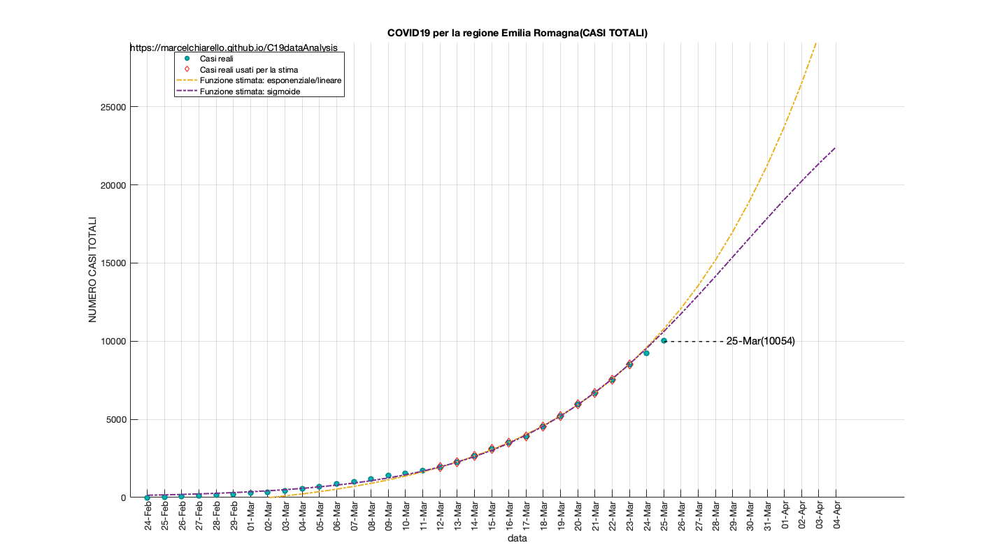
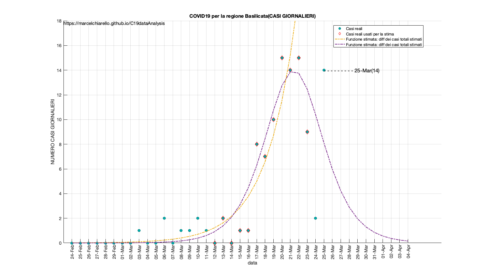
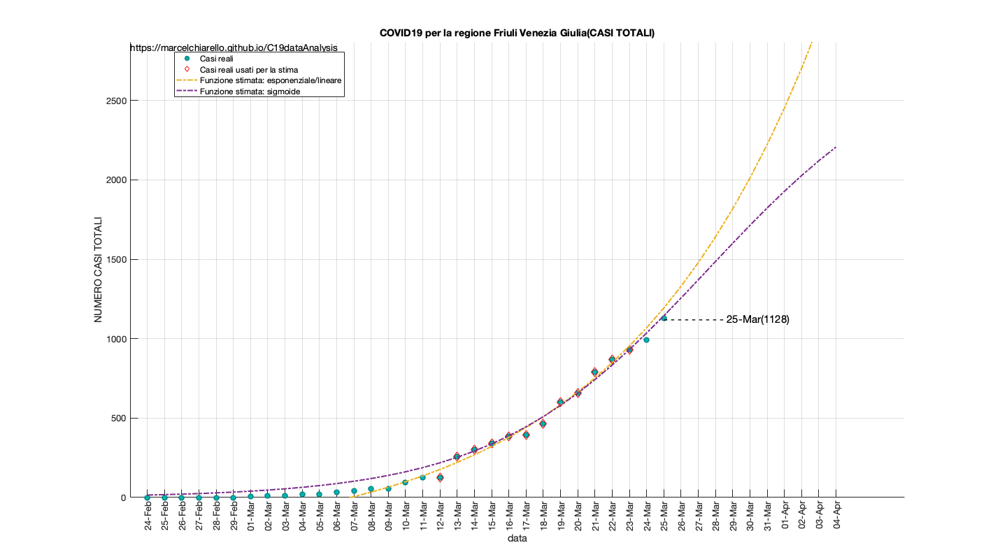
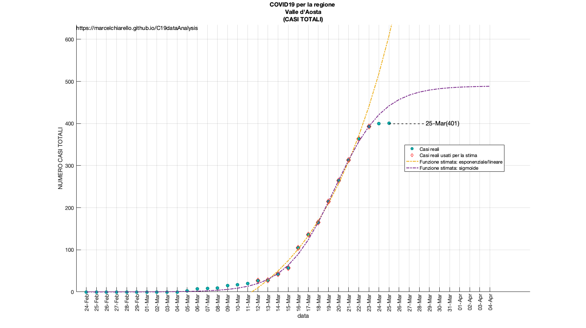

COVID19 Output analysis data updated to March 25, 2020.
DRAFT
EDIT: - Removed the graphs for the individual provinces. - English version, work in progress
Questo report è relativo all' elaborazione dei dati sulla diffusione del COVID-19 in Italia e nelle singole regioni/province. I dati sono forniti dalla protezione civile Italiana, consultabili al segunte link:
"https://github.com/pcm-dpc/COVID-19"
Tale report non è da intendersi come ufficiale o come definitivo nei termini delle previsioni incluse. I modelli non sono di tipo predittivo, bensì equazioni che descrivono i dati disponibili fino a questo momento. Il loro scopo è quello di valutare l andamento attuale, in modo da poter dedurre una eventuale accelerazione o decelerazione del contagio. In generale per ogni campione di dati viene selezionata una prima finestra temporale e la si utilizza per elaborare il modello (fitting) per poi confrontarlo con i giorni successivi.
I valori reali che non sono stati utilizzati per la stima del modello possono sia riferirsi a giorni passati, sia a giorni futuri, per una mera valutazione qualitativa.
-Per quanto concerne i dati regionali e provinciali, il fit è di tipo esponenziale/lineare. Una stima della funzione logistica/sigmoide viene effettuata per alcune regioni e/o province. Tale andamento viene stimato sulla base di una finestra temporale precedente con il fine di verificare che il punto/i punti futuri si collochino al di sopra o al di sotto della curva esponenziale, nell'assunzione che tale scostamento indichi un accelerazione o decelerazione del contagio.
-Per quanto concerne i dati nazionali, viene anche effettuata una stima qualitativa sulla base della funzione logistica/sigmoide, nell'assunzione che il giorno previsto di azzeramento dei contagi, sia conservativo verso il limite inferiore, ossia la minima data che occorre aspettare.
-Le stime vengono effettuate minimizzando la distanza quadratica media dalle curve ed i casi reali (Non Linear Least Square). Ogni modello non tiene conto dei punti iniziali secondo l'ipotesi di una sottostima dei contagi nei giorni che vanno da fine Febbraio/inizio Marzo.
Models and reports are under continuous review.
Source: https://github.com/marcelchiarello/C19dataAnalysis
Site: https://marcelchiarello.github.io/C19dataAnalysis/
Author: Marcello Chiarello
marcello.chiarello@outlook.com
Contents
- GRAFICI ITALIA
- GRAFICI PUGLIA
- GRAFICI LOMBARDIA
- GRAFICI VENETO
- GRAFICI PIEMONTE
- GRAFICI EMILIA ROMAGNA
- GRAFICI CAMPANIA
- GRAFICI SICILIA (Non presente)
- GRAFICI ABRUZZO
- GRAFICI BASILICATA
- GRAFICI CALABRIA
- GRAFICI CAMPANIA
- GRAFICI FRIULI VENEZIA GIULIA
- GRAFICI LAZIO
- GRAFICI LIGURIA
- GRAFICI MARCHE
- GRAFICI MOLISE
- GRAFICI P.A. Bolzano
- GRAFICI P.A. Trento
- GRAFICI SARDEGNA (Non presente)
- GRAFICI TOSCANA
- GRAFICI UMBRIA
- GRAFICI VALLE D' AOSTA
- DATI PUGLIA
- DATI LOMBARDIA
- DATI VENETO
- DATI PIEMONTE
- DATI EMILIA ROMAGNA
- DATI CAMPANIA
- DATI SICILIA
- DATI ABRUZZO
- DATI BASILICATA
- DATI CALABRIA
- DATI CAMPANIA
- DATI VENEZIA GIULIA
- DATI LAZIO
- DATI LIGURIA
- DATI MARCHE
- DATI MOLISE
- DATI P.A. Bolzano
- DATI P.A. Trento
- DATI SARDEGNA
- DATI TOSCANA
- DATI UMBRIA
- DATI VALLE D' AOSTA
GRAFICI ITALIA
RUN DATA: 25-Mar-2020
Tabella riassuntiva casi totali
TABLE =
1×4 table
Contagiati Deceduti Tamponi Dimessi
__________ ________ _______ _______
74386 7503 324445 9362
Tabella riassuntiva casi giornalieri
TABLE =
1×4 table
Contagiati Deceduti Tamponi Dimessi
__________ ________ _______ _______
5210 683 27481 1036
***********************
Stima e previsione dati nazionali
Model Data
Intervallo dati utilizzati per la stima del modello: 10-Mar :: 23-Mar
GRAFICI PUGLIA
RUN DATA: 25-Mar-2020 *********************** Stima e previsione dati regionali Intervallo dati utilizzati per la stima del modello: 12-Mar :: 23-Mar
GRAFICI LOMBARDIA
RUN DATA: 25-Mar-2020 *********************** Stima e previsione dati regionali Intervallo dati utilizzati per la stima del modello: 12-Mar :: 23-Mar
GRAFICI VENETO
RUN DATA: 25-Mar-2020 *********************** Stima e previsione dati regionali Intervallo dati utilizzati per la stima del modello: 12-Mar :: 23-Mar
GRAFICI PIEMONTE
RUN DATA: 25-Mar-2020 *********************** Stima e previsione dati regionali Intervallo dati utilizzati per la stima del modello: 12-Mar :: 23-Mar
GRAFICI EMILIA ROMAGNA
RUN DATA: 25-Mar-2020 *********************** Stima e previsione dati regionali Intervallo dati utilizzati per la stima del modello: 12-Mar :: 23-Mar
GRAFICI CAMPANIA
RUN DATA: 25-Mar-2020 *********************** Stima e previsione dati regionali Intervallo dati utilizzati per la stima del modello: 12-Mar :: 23-Mar
GRAFICI SICILIA (Non presente)
GRAFICI ABRUZZO
RUN DATA: 25-Mar-2020 *********************** Stima e previsione dati regionali Intervallo dati utilizzati per la stima del modello: 12-Mar :: 23-Mar
GRAFICI BASILICATA
RUN DATA: 25-Mar-2020 *********************** Stima e previsione dati regionali Intervallo dati utilizzati per la stima del modello: 12-Mar :: 23-Mar
GRAFICI CALABRIA
RUN DATA: 25-Mar-2020 *********************** Stima e previsione dati regionali Intervallo dati utilizzati per la stima del modello: 12-Mar :: 23-Mar
GRAFICI CAMPANIA
RUN DATA: 25-Mar-2020 *********************** Stima e previsione dati regionali Intervallo dati utilizzati per la stima del modello: 12-Mar :: 23-Mar
GRAFICI FRIULI VENEZIA GIULIA
RUN DATA: 25-Mar-2020 *********************** Stima e previsione dati regionali Intervallo dati utilizzati per la stima del modello: 12-Mar :: 23-Mar
GRAFICI LAZIO
RUN DATA: 25-Mar-2020 *********************** Stima e previsione dati regionali Intervallo dati utilizzati per la stima del modello: 12-Mar :: 23-Mar
GRAFICI LIGURIA
RUN DATA: 25-Mar-2020 *********************** Stima e previsione dati regionali Intervallo dati utilizzati per la stima del modello: 12-Mar :: 23-Mar
GRAFICI MARCHE
RUN DATA: 25-Mar-2020 *********************** Stima e previsione dati regionali Intervallo dati utilizzati per la stima del modello: 12-Mar :: 23-Mar
GRAFICI MOLISE
RUN DATA: 25-Mar-2020 *********************** Stima e previsione dati regionali Intervallo dati utilizzati per la stima del modello: 12-Mar :: 23-Mar
GRAFICI P.A. Bolzano
RUN DATA: 25-Mar-2020 *********************** Stima e previsione dati regionali Intervallo dati utilizzati per la stima del modello: 12-Mar :: 23-Mar
GRAFICI P.A. Trento
RUN DATA: 25-Mar-2020 *********************** Stima e previsione dati regionali Intervallo dati utilizzati per la stima del modello: 12-Mar :: 23-Mar


GRAFICI SARDEGNA (Non presente)
RUN DATA: 25-Mar-2020 *********************** Stima e previsione dati regionali Intervallo dati utilizzati per la stima del modello: 12-Mar :: 23-Mar
GRAFICI TOSCANA
RUN DATA: 25-Mar-2020 *********************** Stima e previsione dati regionali Intervallo dati utilizzati per la stima del modello: 12-Mar :: 23-Mar
GRAFICI UMBRIA
RUN DATA: 25-Mar-2020 *********************** Stima e previsione dati regionali Intervallo dati utilizzati per la stima del modello: 12-Mar :: 23-Mar
GRAFICI VALLE D' AOSTA
RUN DATA: 25-Mar-2020 *********************** Stima e previsione dati regionali Intervallo dati utilizzati per la stima del modello: 12-Mar :: 23-Mar
DATI PUGLIA
RUN DATA: 25-Mar-2020
Tabella casi giornalieri per la regione Puglia
TABLE =
6×2 table
province casiGiornalieri
_______________________ _______________
"Bari" 32
"Barletta-Andria-Trani" 3
"Brindisi" 13
"Foggia" 22
"Lecce" 3
"Taranto" 5
"Casi giornalieri totali:" "78"
"Casi regione totali:" "1014"
fonte: elaborazione dei dati della protezione civile
***********************
Stima e previsione dati regionali
Intervallo dati utilizzati per la stima del modello: 12-Mar :: 23-Mar
DATI LOMBARDIA
RUN DATA: 25-Mar-2020
Tabella casi giornalieri per la regione Lombardia
TABLE =
12×2 table
province casiGiornalieri
_______________________ _______________
"Bergamo" 344
"Brescia" 299
"Como" 71
"Cremona" 95
"Lecco" 61
"Lodi" 24
"Mantova" 83
"Milano" 373
"Monza e della Brianza" 133
"Pavia" 79
"Sondrio" 31
"Varese" 18
"Casi giornalieri totali:" "1611"
"Casi regione totali:" "31658"
fonte: elaborazione dei dati della protezione civile
***********************
Stima e previsione dati regionali
Intervallo dati utilizzati per la stima del modello: 12-Mar :: 23-Mar
DATI VENETO
RUN DATA: 25-Mar-2020
Tabella casi giornalieri per la regione Veneto
TABLE =
7×2 table
province casiGiornalieri
_________ _______________
"Belluno" 25
"Padova" 172
"Rovigo" 5
"Treviso" 86
"Venezia" 37
"Verona" 76
"Vicenza" 80
"Casi giornalieri totali:" "481"
"Casi regione totali:" "6200"
fonte: elaborazione dei dati della protezione civile
***********************
Stima e previsione dati regionali
Intervallo dati utilizzati per la stima del modello: 12-Mar :: 23-Mar
DATI PIEMONTE
RUN DATA: 25-Mar-2020
Tabella casi giornalieri per la regione Piemonte
TABLE =
8×2 table
province casiGiornalieri
______________________ _______________
"Alessandria" 0
"Asti" 26
"Biella" 47
"Cuneo" 32
"Novara" 46
"Torino" 317
"Verbano-Cusio-Ossola" 18
"Vercelli" 18
"Casi giornalieri totali:" "504"
"Casi regione totali:" "5860"
fonte: elaborazione dei dati della protezione civile
***********************
Stima e previsione dati regionali
Intervallo dati utilizzati per la stima del modello: 12-Mar :: 23-Mar
DATI EMILIA ROMAGNA
RUN DATA: 25-Mar-2020
Tabella casi giornalieri per la regione Emilia Romagna
TABLE =
9×2 table
province casiGiornalieri
____________________ _______________
"Bologna" 139
"Ferrara" 14
"Forlì-Cesena" 17
"Modena" 179
"Parma" 90
"Piacenza" 141
"Ravenna" 19
"Reggio nell'Emilia" 149
"Rimini" 52
"Casi giornalieri totali:" "800"
"Casi regione totali:" "10054"
fonte: elaborazione dei dati della protezione civile
***********************
Stima e previsione dati regionali
Intervallo dati utilizzati per la stima del modello: 12-Mar :: 23-Mar
DATI CAMPANIA
RUN DATA: 25-Mar-2020
Tabella casi giornalieri per la regione Campania
TABLE =
5×2 table
province casiGiornalieri
___________ _______________
"Avellino" 17
"Benevento" 0
"Caserta" 13
"Napoli" 38
"Salerno" 38
"Casi giornalieri totali:" "106"
"Casi regione totali:" "1197"
fonte: elaborazione dei dati della protezione civile
***********************
Stima e previsione dati regionali
Intervallo dati utilizzati per la stima del modello: 12-Mar :: 23-Mar
DATI SICILIA
RUN DATA: 25-Mar-2020
Tabella casi giornalieri per la regione Sicilia
TABLE =
9×2 table
province casiGiornalieri
_______________ _______________
"Agrigento" 3
"Caltanissetta" 5
"Catania" 22
"Enna" 27
"Messina" 35
"Palermo" 23
"Ragusa" 13
"Siracusa" 15
"Trapani" 5
"Casi giornalieri totali:" "148"
"Casi regione totali:" "994"
fonte: elaborazione dei dati della protezione civile
***********************
Stima e previsione dati regionali
Intervallo dati utilizzati per la stima del modello: 12-Mar :: 23-Mar
DATI ABRUZZO
RUN DATA: 25-Mar-2020
Tabella casi giornalieri per la regione Abruzzo
TABLE =
4×2 table
province casiGiornalieri
__________ _______________
"Chieti" 13
"L'Aquila" 13
"Pescara" 43
"Teramo" 55
"Casi giornalieri totali:" "124"
"Casi regione totali:" "813"
fonte: elaborazione dei dati della protezione civile
***********************
Stima e previsione dati regionali
Intervallo dati utilizzati per la stima del modello: 12-Mar :: 23-Mar
DATI BASILICATA
RUN DATA: 25-Mar-2020
Tabella casi giornalieri per la regione Basilicata
TABLE =
2×2 table
province casiGiornalieri
_________ _______________
"Matera" 11
"Potenza" 3
"Casi giornalieri totali:" "14"
"Casi regione totali:" "106"
fonte: elaborazione dei dati della protezione civile
***********************
Stima e previsione dati regionali
Intervallo dati utilizzati per la stima del modello: 12-Mar :: 23-Mar
DATI CALABRIA
RUN DATA: 25-Mar-2020
Tabella casi giornalieri per la regione Calabria
TABLE =
5×2 table
province casiGiornalieri
____________________ _______________
"Catanzaro" 2
"Cosenza" 15
"Crotone" 5
"Reggio di Calabria" 8
"Vibo Valentia" 2
"Casi giornalieri totali:" "32"
"Casi regione totali:" "349"
fonte: elaborazione dei dati della protezione civile
***********************
Stima e previsione dati regionali
Intervallo dati utilizzati per la stima del modello: 12-Mar :: 23-Mar
DATI CAMPANIA
RUN DATA: 25-Mar-2020
Tabella casi giornalieri per la regione Campania
TABLE =
5×2 table
province casiGiornalieri
___________ _______________
"Avellino" 17
"Benevento" 0
"Caserta" 13
"Napoli" 38
"Salerno" 38
"Casi giornalieri totali:" "106"
"Casi regione totali:" "1197"
fonte: elaborazione dei dati della protezione civile
***********************
Stima e previsione dati regionali
Intervallo dati utilizzati per la stima del modello: 12-Mar :: 23-Mar
DATI VENEZIA GIULIA
RUN DATA: 25-Mar-2020
Tabella casi giornalieri per la regione Friuli Venezia Giulia
TABLE =
4×2 table
province casiGiornalieri
___________ _______________
"Gorizia" 8
"Pordenone" 76
"Trieste" 26
"Udine" 26
"Casi giornalieri totali:" "136"
"Casi regione totali:" "1128"
fonte: elaborazione dei dati della protezione civile
***********************
Stima e previsione dati regionali
Intervallo dati utilizzati per la stima del modello: 12-Mar :: 23-Mar
DATI LAZIO
RUN DATA: 25-Mar-2020
Tabella casi giornalieri per la regione Lazio
TABLE =
5×2 table
province casiGiornalieri
___________ _______________
"Frosinone" 9
"Latina" 16
"Rieti" 6
"Roma" 141
"Viterbo" 1
"Casi giornalieri totali:" "173"
"Casi regione totali:" "1893"
fonte: elaborazione dei dati della protezione civile
***********************
Stima e previsione dati regionali
Intervallo dati utilizzati per la stima del modello: 12-Mar :: 23-Mar
DATI LIGURIA
RUN DATA: 25-Mar-2020
Tabella casi giornalieri per la regione Liguria
TABLE =
4×2 table
province casiGiornalieri
___________ _______________
"Genova" 86
"Imperia" -9
"La Spezia" 33
"Savona" 6
"Casi giornalieri totali:" "116"
"Casi regione totali:" "1306"
fonte: elaborazione dei dati della protezione civile
***********************
Stima e previsione dati regionali
Intervallo dati utilizzati per la stima del modello: 12-Mar :: 23-Mar
DATI MARCHE
RUN DATA: 25-Mar-2020
Tabella casi giornalieri per la regione Marche
TABLE =
5×2 table
province casiGiornalieri
_________________ _______________
"Ancona" 69
"Ascoli Piceno" 16
"Fermo" 21
"Macerata" 27
"Pesaro e Urbino" 61
"Casi giornalieri totali:" "194"
"Casi regione totali:" "2887"
fonte: elaborazione dei dati della protezione civile
***********************
Stima e previsione dati regionali
Intervallo dati utilizzati per la stima del modello: 12-Mar :: 23-Mar
DATI MOLISE
RUN DATA: 25-Mar-2020
Tabella casi giornalieri per la regione Molise
TABLE =
2×2 table
province casiGiornalieri
____________ _______________
"Campobasso" 0
"Isernia" 0
"Casi giornalieri totali:" "0"
"Casi regione totali:" "64"
fonte: elaborazione dei dati della protezione civile
***********************
Stima e previsione dati regionali
Intervallo dati utilizzati per la stima del modello: 12-Mar :: 23-Mar
DATI P.A. Bolzano
RUN DATA: 25-Mar-2020
Tabella casi giornalieri per la regione P.A. Bolzano
TABLE =
1×2 table
province casiGiornalieri
_________ _______________
"Bolzano" 77
"Casi giornalieri totali:" "77"
"Casi regione totali:" "858"
fonte: elaborazione dei dati della protezione civile
***********************
Stima e previsione dati regionali
Intervallo dati utilizzati per la stima del modello: 12-Mar :: 23-Mar
DATI P.A. Trento
RUN DATA: 25-Mar-2020
Tabella casi giornalieri per la regione P.A. Trento
TABLE =
1×2 table
province casiGiornalieri
________ _______________
"Trento" 112
"Casi giornalieri totali:" "112"
"Casi regione totali:" "1222"
fonte: elaborazione dei dati della protezione civile
***********************
Stima e previsione dati regionali
Intervallo dati utilizzati per la stima del modello: 12-Mar :: 23-Mar
DATI SARDEGNA
RUN DATA: 25-Mar-2020
Tabella casi giornalieri per la regione Sardegna
TABLE =
5×2 table
province casiGiornalieri
______________ _______________
"Cagliari" 10
"Nuoro" 0
"Oristano" 0
"Sassari" 9
"Sud Sardegna" 2
"Casi giornalieri totali:" "21"
"Casi regione totali:" "442"
fonte: elaborazione dei dati della protezione civile
***********************
Stima e previsione dati regionali
Intervallo dati utilizzati per la stima del modello: 12-Mar :: 23-Mar
DATI TOSCANA
RUN DATA: 25-Mar-2020
Tabella casi giornalieri per la regione Toscana
TABLE =
10×2 table
province casiGiornalieri
_______________ _______________
"Arezzo" 18
"Firenze" 87
"Grosseto" 7
"Livorno" 17
"Lucca" 49
"Massa Carrara" 16
"Pisa" 32
"Pistoia" 11
"Prato" 19
"Siena" 17
"Casi giornalieri totali:" "273"
"Casi regione totali:" "2972"
fonte: elaborazione dei dati della protezione civile
***********************
Stima e previsione dati regionali
Intervallo dati utilizzati per la stima del modello: 12-Mar :: 23-Mar
DATI UMBRIA
RUN DATA: 25-Mar-2020
Tabella casi giornalieri per la regione Umbria
TABLE =
2×2 table
province casiGiornalieri
_________ _______________
"Perugia" 51
"Terni" 8
"Casi giornalieri totali:" "59"
"Casi regione totali:" "686"
fonte: elaborazione dei dati della protezione civile
***********************
Stima e previsione dati regionali
Intervallo dati utilizzati per la stima del modello: 12-Mar :: 23-Mar
DATI VALLE D' AOSTA
RUN DATA: 25-Mar-2020
"Tabella casi giornalieri per la regione " "Valle d'Aosta"
TABLE =
1×2 table
province casiGiornalieri
________ _______________
"Aosta" 1
"Casi giornalieri totali:" "1"
"Casi regione totali:" "401"
fonte: elaborazione dei dati della protezione civile
***********************
Stima e previsione dati regionali
Intervallo dati utilizzati per la stima del modello: 12-Mar :: 23-Mar